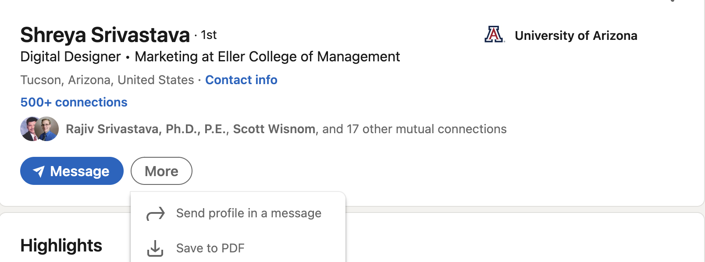
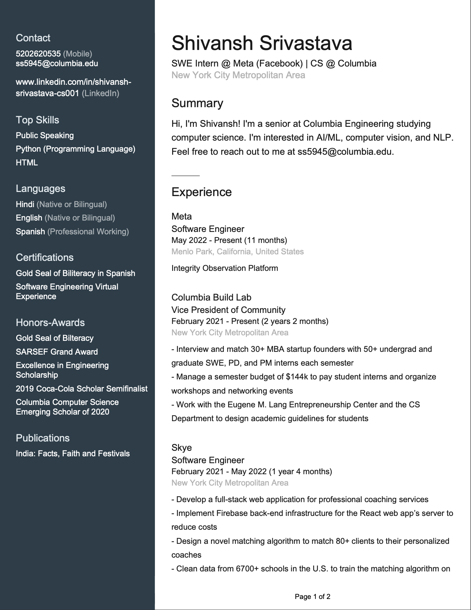

Welcome to ez-parse’s documentation!¶
Overview¶
This is a parser that extracts important information from a LinkedIn profile PDF. It converts the PDF to a list of strings, and then uses LinkedIn's headers to create a dictionary that maps said headers to string values that contain the most relevant parts of a candidate's profile.
Installation¶
Install the library’s dependencies and build the library using the following on the command line:
pip install ez-parse
Accessing LinkedIn PDFs¶
Visit the LinkedIn profile that you would like to parse. Under the individual’s basic profile information, there is a button labeled “More”. Click on this button, and then click on “Save to PDF”.
Usage¶
In your code, begin by importing the package:
from ez-parse import parser
You can extract the text data from the PDF like so:
data = parser.extract_pdf(<path_to_linkedin_pdf>)
This parsed data can also be stored in a dictionary:
res = parser.get_many(data)
In-Depth Example¶
Below is an example of a full parsing of a sample LinkedIn resume. Here is the first page of the PDF for reference:
The full PDF can be accessed here.
- Begin by extracting all the text from the PDF:
>>> li = extract_pdf('sample/Shivansh Srivastava.pdf') >>> print(li) [ "Contact", "5202620535 ", "ss5945@columbia.edu", "", "www.linkedin.com/in/shivansh-", "srivastava-cs001 ", "", "Top Skills", "Public Speaking", "Python (Programming Language)", "HTML", "", "Languages", "Hindi (Native or Bilingual)", "English (Native or Bilingual)", "Spanish (Professional Working)", "", "Certifications", "Gold Seal of Biliteracy in Spanish", "Software Engineering Virtual", "Experience", "", "Honors-Awards", "Gold Seal of Bilteracy", "SARSEF Grand Award", "Excellence in Engineering", "Scholarship", "2019 Coca-Cola Scholar Semifinalist", "Columbia Computer Science", "Emerging Scholar of 2020", "", "Publications", "India: Facts, Faith and Festivals", "", "", "", "", "", "", "", "Shivansh Srivastava", "", "SWE Intern @ Meta (Facebook) | CS @ Columbia", "New York City Metropolitan Area", "", "Summary", "Hi, I'm Shivansh! I'm a senior at Columbia Engineering studying", "computer science. I'm interested in AI/ML, computer vision, and NLP.", "Feel free to reach out to me at ss5945@columbia.edu.", "", "Experience", "", "Meta", "Software Engineer", "May 2022-Present(11 months)", "Menlo Park, California, United States", "Integrity Observation Platform", "", "Columbia Build Lab", "Vice President of Community", "February 2021-Present(2 years 2 months)", "New York City Metropolitan Area", "- Interview and match 30+ MBA startup founders with 50+ \ undergrad and", "graduate SWE, PD, and PM interns each semester", "- Manage a semester budget of $144k to pay student interns \ and organize", "workshops and networking events", "- Work with the Eugene M. Lang Entrepreneurship Center and \ the CS", "Department to design academic guidelines for students", "", "Skye", "Software Engineer", "February 2021-May 2022(1 year 4 months)", "New York City Metropolitan Area", "- Develop a full-stack web application for professional \ coaching services", "- Implement Firebase back-end infrastructure for the React \ web app's server to", "reduce costs", "- Design a novel matching algorithm to match 80+ clients to \ their personalized", "coaches", "- Clean data from 6700+ schools in the U.S. to train the matching \ algorithm on", "", "Page 1 of 2", "", "", "", "", "", "", "", "Education", "Columbia University in the City of New York", "Bachelor of Science - BS,Computer Science(2019-2023)", "", "Catalina Foothills High School", "Honors Diploma(2015-2019)", "", "Page 2 of 2", "", "", ]
- Now, massage the extracted text into a neatly formatted dictionary that maps information under the relevant headers:
>>> res = get_many(li) >>> print(res) { "contact": [ "5202620535", "ss5945@columbia.edu", "www.linkedin.com/in/shivansh-", "srivastava-cs001", ], "skills": ["Public Speaking", "Python (Programming Language)", "HTML"], "languages": [ "Hindi (Native or Bilingual)", "English (Native or Bilingual)", "Spanish (Professional Working)", ], "certifications": [ "Gold Seal of Biliteracy in Spanish", "Software Engineering Virtual", ], "honors": [ "Gold Seal of Bilteracy", "SARSEF Grand Award", "Excellence in Engineering", "Scholarship", "2019 Coca-Cola Scholar Semifinalist", "Columbia Computer Science", "Emerging Scholar of 2020", ], "summary": [ "Hi, I'm Shivansh! I'm a senior at Columbia Engineering studying computer science. I'm interested in AI/ML, computer vision, and NLP. Feel free to reach out to me at ss5945@columbia.edu." ], }
Note that the get_many function relies on the get_contact, get_skills, get_certifications, get_honors, get_summary, and get_languages helper functions under the hood.
- parser.extract_pdf(fname)¶
Function that converts text in a PDF to a list of strings.
- Args:
fname (str): A string with the path to the PDF to be parsed.
- Returns:
result_list (list): A list of strings with all the text in the PDF.
- parser.get_certifications(result_list, i)¶
Function that returns all the text under the ‘Cerifications’ header as a list of strings.
- Args:
result_list (list): A list of strings to be parsed.
i (int): The current index in the list of strings.
- Returns:
certifications (list), j+1 (int): A tuple with 2 elements: a list of strings with all the information for the ‘Cerifications’ header, and an updated index after the parsing so that future parses don’t contain duplicate information.
- parser.get_contact(result_list, i)¶
Function that returns all the text under the ‘Contact’ header as a list of strings.
- Args:
result_list (list): A list of strings to be parsed.
i (int): The current index in the list of strings.
- Returns:
contact (list), j+1 (int): A tuple with 2 elements: a list of strings with all the information for the ‘Contact’ header, and an updated index after the parsing so that future parses don’t contain duplicate information.
- parser.get_honors(result_list, i)¶
Function that returns all the text under the ‘Honors’ header as a list of strings.
- Args:
result_list (list): A list of strings to be parsed.
i (int): The current index in the list of strings.
- Returns:
honors (list), j+1 (int): A tuple with 2 elements: a list of strings with all the information for the ‘Honors’ header, and an updated index after the parsing so that future parses don’t contain duplicate information.
- parser.get_json(result_list)¶
Function that returns all the text under the ‘Contact’, ‘Skills’, ‘Certifications’, ‘Honors’, ‘Summary’, and ‘Languages’ headers in JSON format.
- Args:
result_list (list): A list of strings to be parsed.
- Returns:
res (JSON string): A JSON string that maps the header keys to lists of strings with the parsed text.
- parser.get_languages(result_list, i)¶
Function that returns all the text under the ‘Languages’ header as a list of strings.
- Args:
result_list (list): A list of strings to be parsed.
i (int): The current index in the list of strings.
- Returns:
languages (list), j+1 (int): A tuple with 2 elements: a list of strings with all the information for the ‘Languages’ header, and an updated index after the parsing so that future parses don’t contain duplicate information.
- parser.get_many(result_list)¶
Function that returns all the text under the ‘Contact’, ‘Skills’, ‘Certifications’, ‘Honors’, ‘Summary’, and ‘Languages’ headers as values of a dictionary.
- Args:
result_list (list): A list of strings to be parsed.
- Returns:
res (dict): A dict that maps the header keys to lists of strings with the parsed text.
- parser.get_skills(result_list, i)¶
Function that returns all the text under the ‘Skills’ header as a list of strings.
- Args:
result_list (list): A list of strings to be parsed.
i (int): The current index in the list of strings.
- Returns:
skills (list), j+1 (int): A tuple with 2 elements: a list of strings with all the information for the ‘Skills’ header, and an updated index after the parsing so that future parses don’t contain duplicate information.
- parser.get_summary(result_list, i)¶
Function that returns all the text under the ‘Summary’ header as a list of strings.
- Args:
result_list (list): A list of strings to be parsed.
i (int): The current index in the list of strings.
- Returns:
summary (list), j+1 (int): A tuple with 2 elements: a list of strings with all the information for the ‘Summary’ header, and an updated index after the parsing so that future parses don’t contain duplicate information.